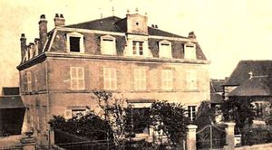
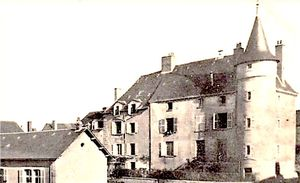
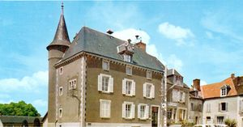
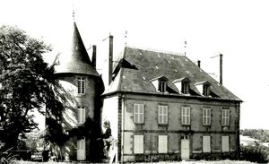
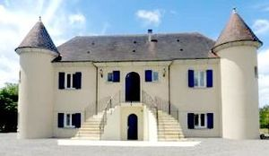

Recensement Jean-Claude Truffet
| Département | 23 — Creuse |
| Canton | Dun le Palestel |
| Commune | Dun de Palestel |
| Type d'édifice | Château |
| Période d'origine | XVI |





A cinq Km à l'Est de Saint-Sulpice le Dunois le chateau de Souvolle et le manoir de Barde. DUN de PALESTEL, le château aujourd'hui est le bureau de postes. Des chartes de 1274 et 1285 du cartulaires d'Aubignac nous apprennent qu'Hugues, vicomte de Brosses était à ces dates, seigneur de Dun et de Châteauclos. A ces maisons succédèrent celles de Chauvigny, de Maillé de la Tour-Landry et d'Aumont. Jean sire d'Aumont, épousa, en 1480, Françoise de Maillé, dame en partie de Dun-le-Palleteau, fille de Hardouin de Maillé, dit de La Tour-Landry, et d'Antoinette de Chauvigny, dame de Chateauroux. Le chevalier Jacques d'Aumont, en 1601 devient seigneur de Dun-le-Palleteau. En 1639, le roi engageait les seigneuries de Dun et de Crozant à Gabriel Foucaud, seigneur de Saint-Cermain-Beaupré, en 1766, les héritiers d'Anne-Françoise Foucault, la dernière de sa lignée, vendirent ces deux comtés à Nicolas Doublet de Persan. En 1786, le château existait et était affermé aux fermiers généraux. SOUVOLLE, ce château appartient en 1369 à Jean de La Celle. La dernière de sa branche, Anne de la Celle, dame de Souvolle, épousa en 1708 Charles du Breuil, chevalier, qui devint seigneur de Sonvolle. Ses armes sont d'argent à la face vivrée de gueules bordée de sable, accompagnée de deux jumelles aussi de gueules bordées de sable.
DUN, ce bâtiment était une dépendance du château de Dun, qui a servi de prison sous lancien régime. De caserne à la maréchaussée, jusquen 1790, puis de gendarmerie de 1791 à 1847. Ce "château" a été utilisé pour la mairie depuis lorigine municipale, décole et de maison de justice de paix, jusquen 1883 date de la construction de la mairie-école. En 1894, la municipalité décida daffecter le batiment à ladministration des P.T.T. BARDE, le château de La Barde, dans sa construction actuelle, date environ de 1831 . Cest dans lancien château, appartenant alors à Léon-Jean-Marie Merle de la Brugière, son oncle, que Silvain François Jules a passé des moments de son enfance. François, son père, ayant sa résidence au « Chef lieu », cest-à-dire dans le Bourg. SOUVOLLE, un dénombrement de 1626 nous apprend que le château de Souvolle consiste en un grand corps de logis, aux quatre coins duquel il y a une tour, une carrée et trois rondes, et en l'une desquelles il y a en haut un colombier. Les dites tours garnies de canonnière, créneaux, machicoulis pour la défense, il y a des girouettes ainsi qu'une chapelle.
Léon-Jean-Marie Merle de la Brugière. Souvolle Charles du Breuil
"
Dun 46° 18' 22? nord, 1° 40' 00? est Grav 1 à 3 Barde Grav 5